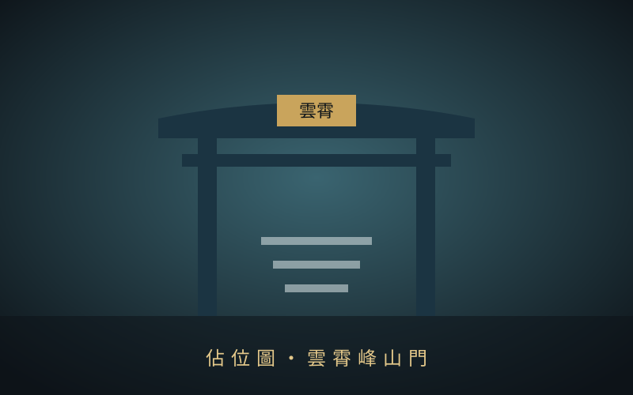

入門不看出身與財富，只看你是否走得完上山的路。
每一步都是對道心的考驗。
徒步攀登九千九百九十九級問心階，途中幻境自現，心志不堅者自會止步。
於山門前以測靈石檢測靈根屬性與資質，結果將決定適合修習的道脈。
由劍、丹、陣三脈長老擇徒，行拜師禮、領取弟子令牌，正式成為雲霄弟子。

山門位置為虛構地點，故不提供地圖連結；電話與 Email 確定後將補上聯絡連結。
了解雲霄仙宗的道統與門規，再決定是否踏上問心階。